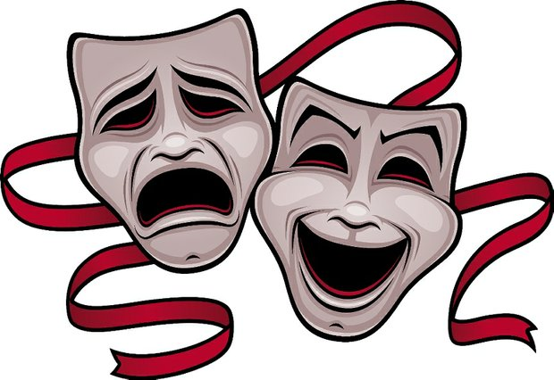

Київський театр
"Вояж-Престиж"
Репертуар
Для молодших вікових груп
Зачароване озеро – постанова на одну дію для дітей віком від 4 до 10 років, мова українська або російська, тривалість 40-45 хвилин, режисер постановки – Бачинська Н. М. Дана постановка в доступній формі розкриває питання захисту навколишнього середовища, дружби та взаємовиручки.
Пастка для неслухняних - авторська постановка на одну дію для дітей віком від 3.5 до 10 років, мова українська або російська, тривалість 40-45 хвилин, режисер постановки – Бачинська Н. М. В постановці розкривається тема повсякденної поведінки дитини, в доступній формі дітям пояснюється необхідність слухати старших.
Навчання Коськи - авторська постановка на одну дію для дітей віком від 4 до 12 років, мова українська або російська, тривалість 40-45 хвилин, режисер постановки – Бачинська Н.М. В ході постановки розкриваються такі питання повсякденної життєдіяльності як правила дорожнього руху та пожежна безпека.
Золота дитина - постановка по мотивах п’єси В. Орлова «Золоте курча» на одну дію. Для дітей віком від 3.5 до 10 років, мова українська або російська, тривалість 40-45 хвилин, режисер постановки – Бачинська Н.М. Одна із самих популярних та актуальних п’єс дитячих театрів, що розкриває відносини між дітьми та дорослими.
Новорічні пригоди - авторська тематична постановка на одну дію для дітей віком від 3.5 до 12 років, мова українська або російська, тривалість 40-50 хвилин, режисер постановки – Бачинська Н.М. Весела зустріч Нового року з конкурсами, жартами та подарунками.
Принцеса та лісоруб - весела постановка на одну дію по мотивам народної казки, для різних вікових груп, мова українська або російська, тривалість 40-50 хвилин, режисер постановки - Бачинська Н.М.
Чарівні слова - авторська тематична постановка на одну дію для дітей віком від 3.5 до 12 років, мова українська або російська, тривалість 40 хвилин. Режисер - Бачинська Н.М. Дітям у доступній формі пояснюється що таке ввічливість.
Скарбниця знань - авторська тематична постановка на одну дію для дітей віком від 3.5 до 12 років, мова українська або російська, тривалість 45 хвилин. Скарби які завжди з вами.
Ульянка - авторська постановка на одну дiю по мотивах народних казок, для дiтей вiком до 12 рокiв, мова українська або росiйська, тривалiсть 45 хвилин. Казковi пригоди, як в навчанні підмога.
Мішкини пригоди - весела авторська постановка, на одну дію для дітей віком від 4 до 12 років, мова українська або російська, тривалість 40хв. Режисер - Бачинська Н.М. Казкові пригоди Міхаїла , та його ведмедиків.
Як у Ляни на галявині - повчально-ігрова постановка для дітей віком до 13 років завдяки своїй універсальності може використовуватися як повчальний спектакль-гра з будь-якою тематикою, цікавою як малятам так і дітям більш старшого віку.
Корисні поради - авторська постановка на одну дію для дітей віком від 4 до 11 років, мова українська або російська, тривалість 40 хв., реж. Бачинська Н.М. В ході постановки розкриваються питання повсякденної життєдіяльності.
Справжня казка - постанова на одну дію для дітей віком від 3.5 до 10 років, мова українська або російська, тривалість 40-45хв. Постановка в доступній формі розкриває питання обережного відношення до особистих речей .
Пригоди привида Еспера - постанова на одну дію для дітей віком від 3.5 років, мова українська або російська, тривалість 40-45 хв. В постанові розкриваються питання дружби та взаємовиручки, може включати в себе різну тематику.
Іванко - постанова на одну дію для дітей віком від 3.5 років, мова українська, тривалість 40-45 хв. За мотивами одноіменної казки.
Примхлива принцеса - постанова на одну дію для дітей віком від 4-х років, мова українська або російська, тривалість 40-45 хв., реж. Бачинська Н.М., за мотивами однойменної чеської казки.
Для старших вікових груп
Перезагрузка - постановка на два акти по мотивам однойменного твору Д. Лойджа. Тривалість 60-80 хв., вік від 14 років, режисер постановки – Бачинська Н.М. В ході постановки розкриваються питання, що стосуються теми комп’ютерної залежності серед молоді, в простій, доступній формі показані способи протидії негативним наслідкам цього роду залежності.
Капіталіст - соціально-сатирична комедія на два акти по мотивам твору І. Карпенко-Карого “Хазяїн”. Тривалість 60-80 хв., вік від 14 років, режисер постановки – Бачинська Н.М. Скупість доведена до абсурду, відсутність культури і нікчемне честолюбство – все це робить будь-яку людину огидною і смішною.
Справжні мрійники - постановка на два акти по мотивам однойменного твору Н. М. Бачинської. Тривалість 60-80 хв., вік від 14 років, режисер постановки – Бачинська Н. М. Усі ми колись мріяли, мріємо і мріятимемо і як добре коли наші мрії збуваються, але ще краще коли вони збуваються саме так, як ми цього бажали.
Лабiринт долi - постановка на одну дiю по мотивам твору С. Мальчика. Режисер постановки - С. Мальчик. Сучасна постановка про взаємовідносини дiтей i батькiв - стара тема актуальна завжди.
Це наш дім - соціальна постановка по мотивам однойменного твору К. Корсика . Тривалість 70хв., вік від 14 років, режисер постановки - Бачинська Н. М., помічник - С. Мальчик. Постанова, яка розкриває проблему правопорушень серед сучасної молоді, а також показує працю правозахисників з іншого, що відрізняється від повсякденних стереотипів, боку.
Я герой... - соціальна драма , спроба перенести переживання сучасної молоді з приводу своєї неспроможності на театральні підмостки. Однак не все так однозначно і сучасна молодь - це покоління свого часу. По мотивам твору К.Корсика "Всі мої Я"